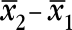
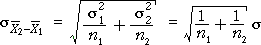
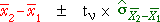
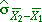
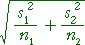
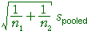
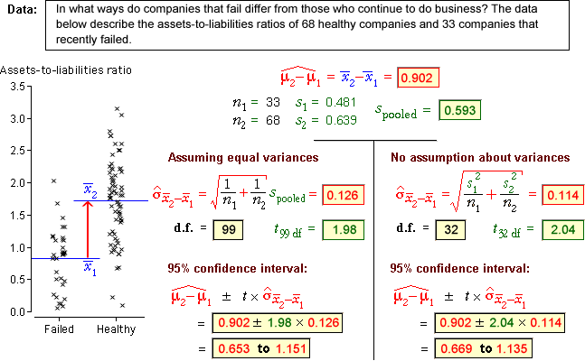
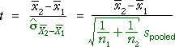

Revisiting the difference between two group means
In this page, we re-examine inference about the difference between two group means, µ2 - µ1, but we now assume that both groups have the same standard deviation,
σ1 = σ2 = σ
Inference is still based on , but the equation for its standard deviation can be simplified

Confidence interval
A 95% confidence interval for µ2 - µ1 has the same general form as before,

However the value used for the standard deviation and the degrees of freedom for the t-value, ν, are different.
|  | degrees of freedom | |
|---|---|---|
| Allowing σ1 ≠ σ2 |  | min( n1 - 1, n2 - 1) |
| Assuming σ1 = σ2 = σ |  | n1 + n2 - 2 |
When the standard deviations are assumed to be equal, the degrees of freedom are larger, so the t-value used for the confidence interval is smaller and the confidence interval itself is usually narrower.
Recommendation
Since the 95% CI for the difference in means is usually narrower when the standard deviations are assumed to be the same, it might appear that this would be the best CI to use. However
Therefore:
It is usually best to avoid assuming equal standard deviations and use the earlier confidence interval.
Examples
The diagram below shows 95% confidence intervals obtained by the two methods for a few data sets.

Observe that the 95% confidence intervals are similar when the sample sizes are large. When the sample sizes are small however, the t-value is smaller when the variances are assumed equal and the confidence interval is narrower.
Hypothesis tests
If it can be assumed that σ1 = σ2 = σ, the test for equal means can also be modified.
H0 : µ2 − µ1 = 0
HA: µ2 − µ1 ≠ 0
The test would be based on the test statistic

The p-value for the test is found from the tail area of the t distribution with (n1 + n2 - 2) degrees of freedom. However it is usually better to stick with the earlier test to avoid making assumptions about the variances.